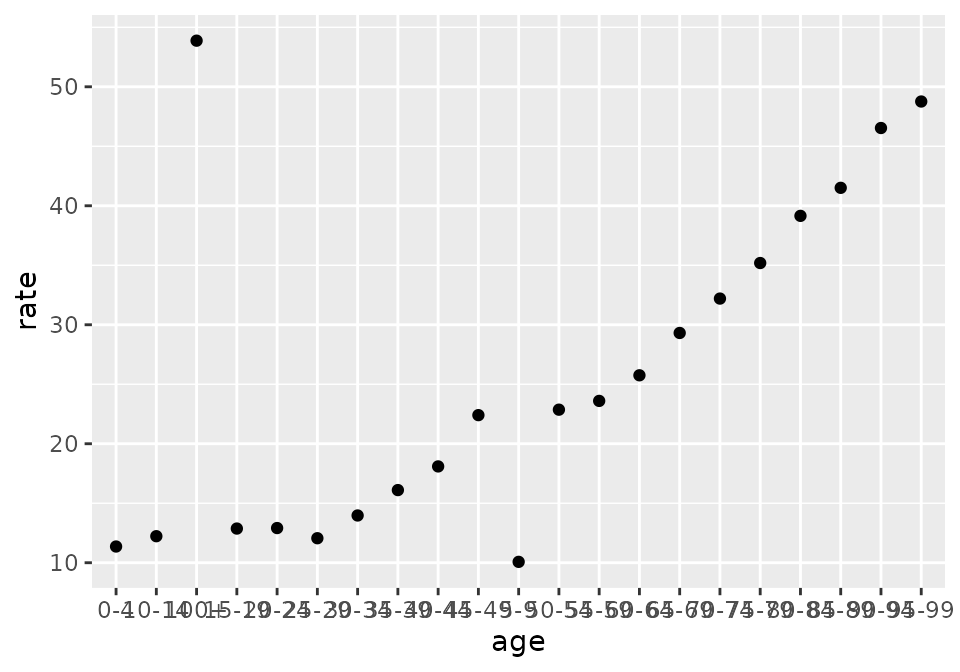
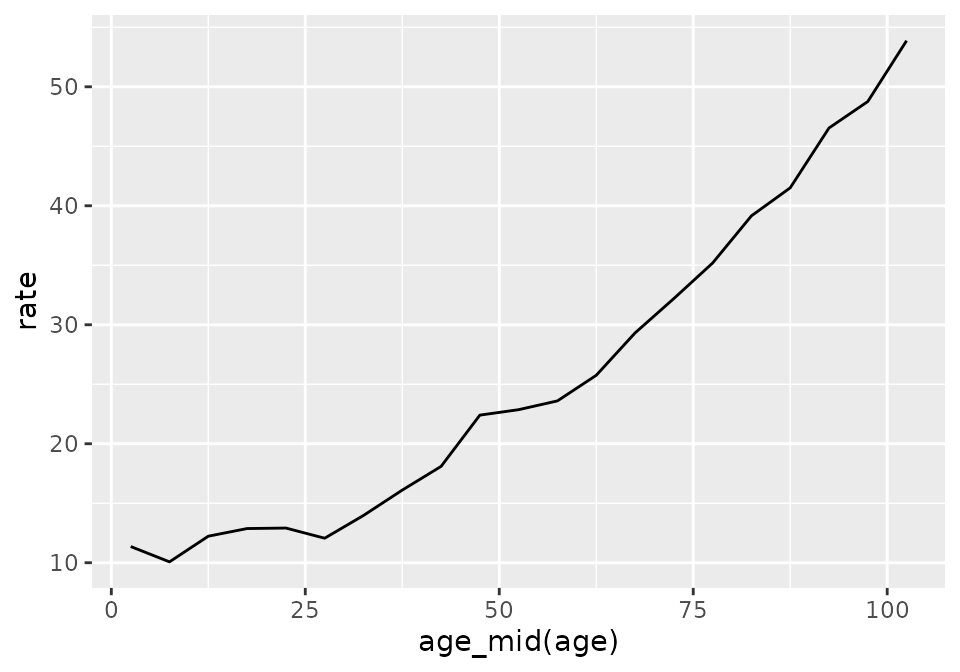

Cookbook for agetime Package
cookbook.RmdCreate and modify labels
Create labels from scratch
Solution
For labels with regular widths, use functions such as
age_labels_ten() or period_labels_five().
age_labels_ten()
#> [1] "0-9" "10-19" "20-29" "30-39" "40-49" "50-59" "60-69" "70-79" "80-89"
#> [10] "90-99" "100+"
period_labels_five(
lower_first = 2001,
lower_last = 2031
)
#> [1] "2001-2006" "2006-2011" "2011-2016" "2016-2021" "2021-2026" "2026-2031"
#> [7] "2031-2036"For labels with irregular widths, use age_labels(),
period_labels(), or cohort_labels(), and
specify the breaks.
age_labels(
breaks = c(0, 20, 65, 100),
)
#> [1] "0-19" "20-64" "65-99" "100+"
cohort_labels(
breaks = c(2000, 2010, 2030),
open_left = TRUE
)
#> [1] "<2000" "2000-2010" "2010-2030"Discussion
There is no universally accepted set of conventions on how age,
period, and cohort labels should be formatted, but agetime
tries to reflect common practices.
See Also
- The help pages for
age_labels(),period_labels(), andcohort_labels()describeagetimeformatting rules
Standardize labels
Solution
Use age_standard(), period_standard(), or
cohort_standard().
df <- tibble(
age = c("5to9", "10--14", "100plus", "infants"),
count = c(11, 9, 2, 22)
)
df |>
mutate(age = age_standard(age))
#> # A tibble: 4 × 2
#> age count
#> <chr> <dbl>
#> 1 5-9 11
#> 2 10-14 9
#> 3 100+ 2
#> 4 0 22Discussion
If the labels argument is a factor, then the
standard functions standardize the factor levels along with
the values.
See Also
- The help pages for
age_standard(),period_standard(), andcohort_standard()describeagetimeformatting rules
Create labels for a forecast
Solution
Use period_extend().
recent <- c("2020-2025", "2025-2030")
period_extend(recent, n = 2)
#> [1] "2020-2025" "2025-2030" "2030-2035" "2035-2040"See Also
-
age_extend()extends age groups andcohort_extend()extends cohorts.
Specify an open-ended age group, period, or cohort
Problem
Move the starting point of existing open age groups, open periods, or open cohorts, or specify a new open age group, open period, or open cohort.
An open interval is one that has no lower limit
(e.g. "<2000") or no upper limit
(e.g. "85+").
Solution
Use
-
age_set_open_right(), -
period_set_open_left(), -
period_set_open_right(), -
cohort_set_open_left(), or -
cohort_set_open_right().
labels_age <- c("0-4", "60-64", "90+")
age_set_open_right(labels_age, at = 80)
#> [1] 0-4 60-64 80+
#> Levels: 0-4 60-64 80+Discussion
The set_open functions always return factors. If you
would prefer a character vector, call as.character() on the
result,
labels_age |>
age_set_open_right(at = 80) |>
as.character()
#> [1] "0-4" "60-64" "80+"Create an age variable that sorts properly
Solution
Function age_set_order() creates a factor with levels in
the right order.
labels_unordered <- c("10-14", "0-4", "5-9")
age_set_order(labels_unordered)
#> [1] 10-14 0-4 5-9
#> Levels: 0-4 5-9 10-14Discussion
If labels is not a factor, age_set_order()
turns it into one.
See Also
-
period_set_order()andcohort_set_order()permanently modify period and cohort variables. - Order by age when working interactively
- The
set_open,coarsen, andfillfunctions, like theset_orderfunctions, always return factors
Ensure that all age groups appear in a table
Solution
Generate the full set of labels with
then join the data on to the set.
all_ages <- tibble(
age = age_labels_five(
lower_first = 0,
lower_last = 20,
open_right = FALSE
)
)
observed <- tibble(
age = c("0-4", "10-14"),
n = c(30, 25)
)
all_ages |>
left_join(observed, by = "age")
#> # A tibble: 5 × 2
#> age n
#> <chr> <dbl>
#> 1 0-4 30
#> 2 5-9 NA
#> 3 10-14 25
#> 4 15-19 NA
#> 5 20-24 NADiscussion
age_labels_life() creates the labels used by an abridged
life table, "0", "1-4", "5-9",
"10-14", …
See Also
- Periods and cohorts have equivalent
labelsfunctions. - The
fillfunctions (e.g.age_fill_five()) add intermediate levels to a factor. - Create an age variable that sorts properly
Validate labels
Solution
Use the diagnose functions for diagnostics. Use the
assert functions to throw an error as soon as a condition
is violated.
lab <- c("2020-2025", "2025-2030", "2030-2035")
period_diagnose(lab, no_gap = TRUE, no_overlap = TRUE)
#> $ok
#> [1] TRUE
#>
#> $details
#> # A tibble: 2 × 3
#> condition passed comment
#> <chr> <lgl> <chr>
#> 1 no_overlap TRUE NA
#> 2 no_gap TRUE NA
pop <- tibble(
age = c("0-4", "5-9", "10-14"),
count = c(100, 110, 105)
)
pop |>
mutate(age = age_assert(age, has_zero = TRUE, no_gap = TRUE))
#> # A tibble: 3 × 2
#> age count
#> <chr> <dbl>
#> 1 0-4 100
#> 2 5-9 110
#> 3 10-14 105Discussion
The diagnose functions return a list with an
ok flag and details.
The assert functions return their input invisibly when
checks pass. Returning their inputs allows them to be used in
pipelines.
See Also
-
?age_diagnose,?period_diagnose, or?cohort_diagnosefor the full set of conditions - When working with subsets of factors, you might want to validate labels - based on values, not levels
Validate labels - based on values, not levels
Problem
When labels is a factor, the diagnose and
assert functions check factor levels, including
unused levels, rather than the values themselves. For instance, if we
have
labels <- factor(c("0-4", "5-9"))then the check
age_assert(labels[2], has_zero = TRUE)will pass because it is applied to the levels of
labels[2] (i.e. c("0-4", "5-9")) and not the
value ("5-9").
This means, for instance, that the following test will pass, even
though the "M" group does not have any age groups starting
with 0.
Solution
To check the values of a factor, rather than the levels, use the
diagnose_values and assert_values
functions.
df |>
mutate(age = age_assert_values(age, has_zero = TRUE))
#> Error in `mutate()`:
#> ℹ In argument: `age = age_assert_values(age, has_zero = TRUE)`.
#> ℹ In group 2: `gender = "M"`.
#> Caused by error in `throw_assert_error()`:
#> ! Assertion failed.
#> <pillar> <tibble[,3]> # A tibble: 1 × 3 condition passed comment <chr> <lgl>
#> <chr> 1 has_zero FALSE Lowest interval among values: '5-9'See Also
- Validate labels for checking factor levels, not values
Analyse data
Filter rows by age, period, or cohort
Solution
Filter on lower or upper limits.
df <- tibble(
age = c("0-14", "15-64", "65+", "Total"),
period = c("2017", "2033", "2050+", "2020-2030"),
count = c(100, 200, 50, 350)
)
df |>
filter(age_lower(age) >= 15)
#> # A tibble: 2 × 3
#> age period count
#> <chr> <chr> <dbl>
#> 1 15-64 2033 200
#> 2 65+ 2050+ 50
df |>
filter(period_upper(period) <= 2030)
#> # A tibble: 2 × 3
#> age period count
#> <chr> <chr> <dbl>
#> 1 0-14 2017 100
#> 2 Total 2020-2030 350Drop totals from a dataset
Solution
Use age_is_total(), period_is_total(), or
cohort_is_total() to identify rows with totals and then
filter.
df <- tibble(
age = c("0-14", "15-64", "65+", "All"),
count = c(10, 20, 5, 35)
)
df |>
filter(!age_is_total(age))
#> # A tibble: 3 × 2
#> age count
#> <chr> <dbl>
#> 1 0-14 10
#> 2 15-64 20
#> 3 65+ 5Discussion
age_is_total(), period_is_total(), and
cohort_is_total() recognize synonyms for totals
(e.g. "all") and ignore case
(e.g. "tOTaL").
Drop “Not stated” categories from a dataset
Solution
Use age_is_missing(), period_is_missing(),
or cohort_is_missing() to identify rows with not stated or
missing and then filter.
df <- tibble(
time = c("2005", "unknown", "2005-2010", NA),
count = c(100, 2, 55, 12)
)
df |>
filter(!period_is_missing(time))
#> # A tibble: 2 × 2
#> time count
#> <chr> <dbl>
#> 1 2005 100
#> 2 2005-2010 55Discussion
age_is_missing(), period_is_missing(), and
cohort_is_missing() look for NAs, but also for
text equivalents, such as "Not stated",
"Don't know" or "n/a".
Order by age when working interactively
Include levels that don’t appear in the data
Problem
Some age groups, periods, or cohorts don’t appear in the data. Tabulations and other calculations don’t account for these levels, leading to gaps in the output.
Solution
Use one of the fill functions such as
age_fill_five().
df <- tibble(
age = c("0-4", "10-14", "0-4"),
respondents = c(10, 20, 5)
)
## includes 5-9
df |>
mutate(age = age_fill_five(age)) |>
count(age, wt = respondents, .drop = FALSE)
#> # A tibble: 3 × 2
#> age n
#> <fct> <dbl>
#> 1 0-4 15
#> 2 5-9 0
#> 3 10-14 20Note that tidyverse functions such as count() and
summarise() drop unused levels by default. If
.drop = FALSE is not included in the call to
count(), then the extra level added by
age_fill_five() does not appear in the results,
df |>
mutate(age = age_fill_five(age)) |>
count(age, wt = respondents)
#> # A tibble: 2 × 2
#> age n
#> <fct> <dbl>
#> 1 0-4 15
#> 2 10-14 20Discussion
The fill functions change the levels of
labels, not the values. If labels is not a
factor, the fill functions turn it into one.
See Also
- The full set of
fillfunctions:
-
age_set_order(),period_set_order(),cohort_set_order()put levels in the right order.
Aggregate to broader age groups
Solution
Convert to coarser labels, then aggregate.
deaths <- tibble(
age = c("0", "1", "2", "5", "6", "10", "11"),
n = c(3, 1, 2, 4, 5, 6, 7)
)
deaths
#> # A tibble: 7 × 2
#> age n
#> <chr> <dbl>
#> 1 0 3
#> 2 1 1
#> 3 2 2
#> 4 5 4
#> 5 6 5
#> 6 10 6
#> 7 11 7
deaths |>
mutate(age = age_coarsen_five(age)) |>
count(age, wt = n)
#> # A tibble: 3 × 2
#> age n
#> <chr> <dbl>
#> 1 0-4 6
#> 2 10-14 13
#> 3 5-9 9Discussion
For irregular age groups, use age_coarsen(). To
aggregate to (abridged) life-table ages, use
age_coarsen_life().
Use age, period, or cohort on the x-axis of a plot
Problem
Plots that use non-numeric age groups, periods, or cohorts on the x-axis often look terrible, with overlapping labels and points instead of smooth curves. Sometimes ages are also in the wrong order, e.g. “100+” after “10-14” and “5-9” after “50-54”.
df <- tibble(
age = age_labels_five(),
rate = 10 + 0.1 * (1:21)^2 + rnorm(21)
)
ggplot(df, aes(x = age, y = rate)) +
geom_point()
Solution
Convert age, period, or cohort to a continuous variable by using
age_mid(), period_mid(), or
cohort_mid() to calculate midpoints.

Calculate annual rates
Solution
Use period_width().
df <- tibble(
period = c("2010-2020", "2020-2024", "2024-2030"),
departures = c(2000, 50, 3000)
)
df |>
mutate(
n_year = period_width(period),
annual_rate = departures / n_year
)
#> # A tibble: 3 × 4
#> period departures n_year annual_rate
#> <chr> <dbl> <dbl> <dbl>
#> 1 2010-2020 2000 10 200
#> 2 2020-2024 50 4 12.5
#> 3 2024-2030 3000 6 500Build a mapping between age groups
Solution
Use age_mapping().
classif_fine <- age_labels_life()
classif_broad <- age_labels(breaks = c(0, 15, 65, 85))
age_mapping(
labels_x = classif_fine,
labels_y = classif_broad,
relation = "is-contained-in"
)
#> # A tibble: 22 × 2
#> x y
#> <chr> <chr>
#> 1 0 0-14
#> 2 1-4 0-14
#> 3 5-9 0-14
#> 4 10-14 0-14
#> 5 15-19 15-64
#> 6 20-24 15-64
#> 7 25-29 15-64
#> 8 30-34 15-64
#> 9 35-39 15-64
#> 10 40-44 15-64
#> # ℹ 12 more rowsDiscussion
Other possible values for relation are
"equals", "contains", and
"overlaps-with".
To represent the mapping as a matrix rather than a data frame, set
format to "matrix",
age_mapping(
labels_x = classif_fine,
labels_y = classif_broad,
relation = "is-contained-in",
format = "matrix"
)
#> y
#> x 0-14 15-64 65-84 85+
#> 0 1 0 0 0
#> 1-4 1 0 0 0
#> 5-9 1 0 0 0
#> 10-14 1 0 0 0
#> 15-19 0 1 0 0
#> 20-24 0 1 0 0
#> 25-29 0 1 0 0
#> 30-34 0 1 0 0
#> 35-39 0 1 0 0
#> 40-44 0 1 0 0
#> 45-49 0 1 0 0
#> 50-54 0 1 0 0
#> 55-59 0 1 0 0
#> 60-64 0 1 0 0
#> 65-69 0 0 1 0
#> 70-74 0 0 1 0
#> 75-79 0 0 1 0
#> 80-84 0 0 1 0
#> 85-89 0 0 0 1
#> 90-94 0 0 0 1
#> 95-99 0 0 0 1
#> 100+ 0 0 0 1Adopt coarser age groups from another age variable
Solution
Use age_coarsen_to().
Discussion
If any of the age groups in labels do not map uniquely
on to an age group in to, then
age_coarsen_to() throws an error.